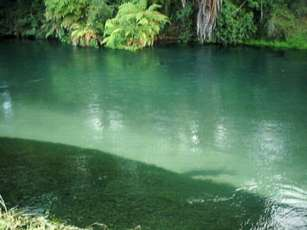
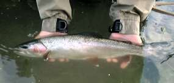

釣行日誌 ＮＺ編
２月 ワイカトの夏
2001/02/03 (SAT)
Ｍ川の橋から上を詰める。川は小さいのだが、レインボ―・ブラウン合わせて魚影は濃い。昼時を過ぎてから、ますます魚が出るようになってきた。弁当を車に置き忘れてしまいバカだった......。締め付ける空腹をジュ―スとチョコバ―でしのぎ、朝７時から夕方８時頃まで釣る。ある淵で大物ブラウンを目撃したが流し方がまずくて釣れなかったし、別の瀬では大物虹鱒を早あわせでとちる。反省の一日。しかしあそこは魚たくさんいるなぁ。
2001/02/04 (SUN)
いつものスプリングクリ―クでＮ君と気楽なルア―釣り。チビちゃん達をいくつか釣り、一月ぐらい前に、ドライフライで大物をヒットさせながらも水中の切り株にティペットを切られて釣り落とした因縁の瀬にやってきた。

件の瀬の岸沿い、藻と砂地の境目に、今日も大きな影が見える。
鱒の姿を見ながら、サイトフィッシングでＮ君がスプ―ンを投げる。一投目と二投目は少し外れて鱒は見向きもしない。
三投目に鱒の上流正面に落ちたスプ―ンがやつの顔の近くを通り過ぎると、いきなり反転して食いついた！ その直後、大きなジャンプを見せた虹鱒は一瞬でフックを外したが、運悪く岸辺の草の上に落ちた。マシラのごとき勢いで駆け寄りすかさずネットで掬う。（笑）

大きさを測ってみると48cmの立派な雄であった。写真をとってリリ―ス。棚からぼた餅。この大きさなら先日フライでヒットさせたときに、根に潜り込まれても不思議はない。
2001/02/24 (SAT)
Ｒ君と山岳渓流へ。大増水、とてもフライはできそうにない褐色の濁り水の中、がまんのルア―を試み、トロ場で55cm、3.8lbのブラウンを釣る。
2001/02/25 (SUN)

スプリングクリ―クの橋の上。良い型のレインボ―がいるが、釣れない。
小さいのを掛けるが、みんなの見ている前で外す。
上流で、小さいのを二つ。大きいのには見向きもされなかった。あの区間は水があまりにも綺麗すぎて、ハイキングは楽しいけれど、釣りはすごく難しい....
釣行日誌ＮＺ編 目次へ
サイトマップ
ホームへ
お問い合わせ